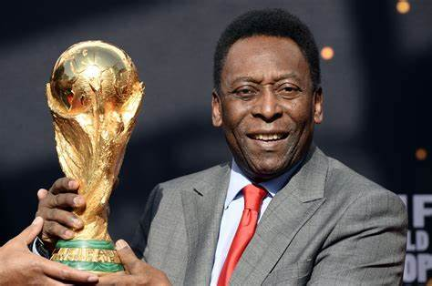
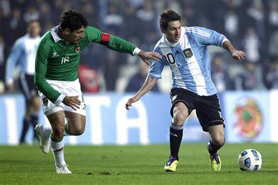

The more difficult the victory, the greater the happinesss in winning.
List of Sports

Football
Football

Association football, more commonly known as simply football or soccer, is a team sport played with a spherical ball between two teams of 11 players. It is played by approximately 250 million players in over 200 countries and dependencies, making it the world's most popular sport. The game is played on a rectangular field called a pitch with a goal at each end. The object of the game is to score more goals than the opposition by moving the ball beyond the goal line into the opposing goal, usually within a time frame of 90 or more minutes. ABOUT FOOTBALL